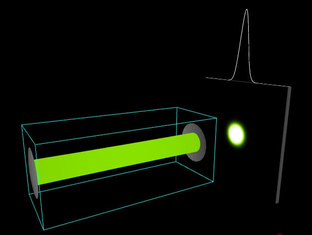

Definitions
Wavelength = laser wavelength in vacuum
R1 = radius of curvature of Mirror 1
R2 = radius of curvature of Mirror 2
L = distance between mirrors
z = distance from beam waist to observation screen
Image 1: TEM 00 Gaussian Beam
Wavelength = 500 nm, R1 = R2 = 520 mm, L = 1000 mm, and z = 2000 mm.
The laser cavity is a near-concentric resonator.
To download the high resolution image, copy the following link into your
Image 2: TEM 00 Gaussian Beam
The parameter values are the same as those of Image 1, except that L = 520 mm. Since R1 = R2 = L,
the laser cavity is a confocal resonator.
To download the high resolution image, copy the following link into your
Image 3: TEM 00 Gaussian Beam
The parameter values are the same as those of Image 1, except that z = 1400 mm.
To download the high resolution image, copy the following link into your

Image 4: TEM 00 Gaussian Beam
The parameter values are the same as those of Image 3, except that R1 = R2 = L = 1000 mm. The laser
cavity is a confocal resonator.
To download the high resolution image, copy the following link into your
Image 5: TEM 00 Gaussian Beam
The parameter values are the same as those of Image 1, except that Wavelength = 400 nm.
To download the high resolution image, copy the following link into your
Image 6: TEM 00 Gaussian Beam
The parameter values are the same as those of Image 1, except that Wavelength = 700 nm.
To download the high resolution image, copy the following link into your
Image 7: TEM 10 Gaussian Beam
The parameter values are the same as those of Image 1. A vertical wire has been inserted into
the cavity to force the laser to oscillate in the TEM 10 mode.
To download the high resolution image, copy the following link into your
Image 8: TEM 01 Gaussian Beam
The parameter values are the same as those of Image 1. A horizontal wire has been inserted into the
cavity to force the laser to oscillate in the TEM 01 mode.
To download the high resolution image, copy the following link into your
Image 9: TEM 11 Gaussian Beam
The parameter values are the same as those of Image 1. Crossed wires have been inserted into the
cavity to force the laser to oscillate in the TEM 11 mode.
To download the high resolution image, copy the following link into your